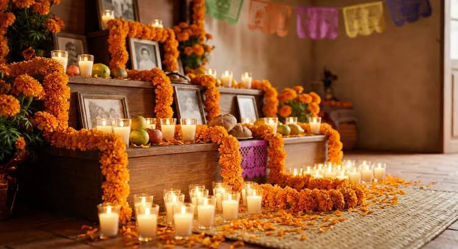
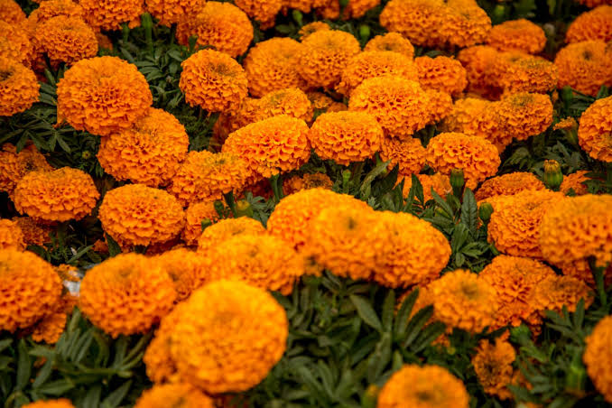
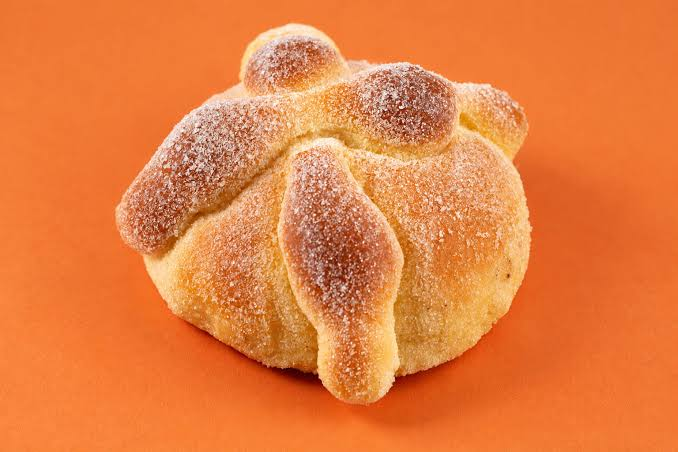
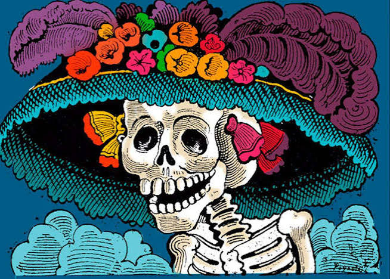

Flores de cempasúchil
Su color y aroma se utilizan tradicionalmente para guiar a las almas.
El Día de Muertos es una celebración mexicana dedicada a recordar y honrar a nuestros seres queridos que han fallecido.
Conoce nuestra tradiciónEl Día de Muertos es una tradición mexicana que se celebra principalmente el 1 y 2 de noviembre. Tiene raíces en las culturas indígenas y se transformó con la influencia de las tradiciones católicas. Durante esta celebración, las familias recuerdan a sus seres queridos mediante ofrendas, flores, alimentos y fotografías.
Las ofrendas son una de las partes más importantes de esta celebración. Cada elemento tiene un significado especial.
Su color y aroma se utilizan tradicionalmente para guiar a las almas.
Representan la luz que guía el camino de los difuntos.
Es un alimento tradicional que se coloca como ofrenda.
Recuerdan a las personas a quienes está dedicada la ofrenda.
Simboliza la pureza y se ofrece para calmar la sed de las almas.
Decora la ofrenda y se relaciona con el elemento aire.
Son composiciones en verso que hablan de la muerte con humor.
Algunas familias visitan y decoran las tumbas de sus seres queridos.
Las familias preparan ofrendas con fotografías, alimentos y objetos especiales.
Conoce algunos de los símbolos y tradiciones del Día de Muertos.



